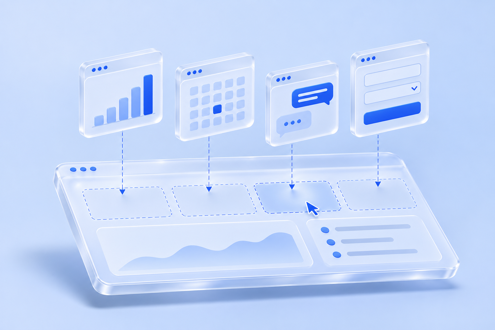

S
SiteDock
워크스페이스
›
스튜디오 온
로컬 데모
사이트 미리보기 ↗
SITE STUDIO
고객 사이트에
새 기능을 더하세요.
GitHub 기능 블록을 페이지에 놓고, 프롬프트로 원하는 동작을 설정하세요.
편집기에서 체험하기
↓

CANVAS
사이트 캔버스
▱
▯
● ● ●
studio-on.example / 고객 포털
스튜디오 온
고객 포털
＋
여기에 기능 블록을 놓으세요
고객 사이트 미리보기
닫기 ×